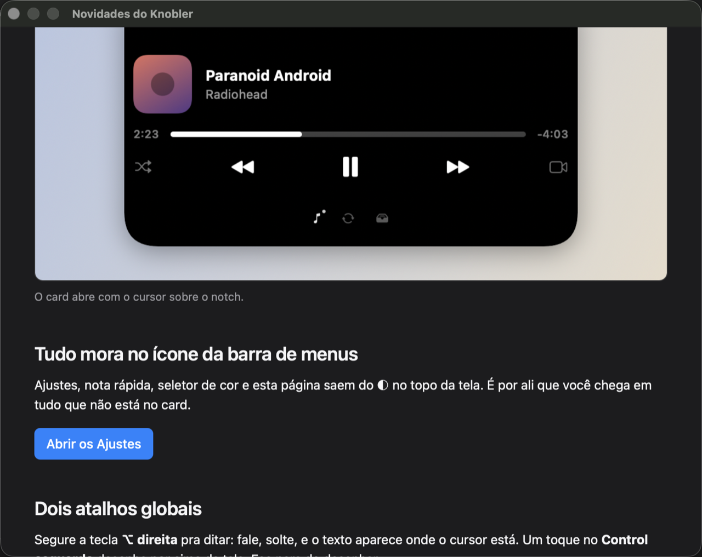

A partir de agora, toda versão nova do Knobler abre uma página como esta na primeira vez que o app roda — com print e o passo a passo de cada novidade. Ela substitui a antiga janela de boas-vindas, que era só texto.

Se você pulou versões, a página traz todas as que faltavam, da mais nova pra mais antiga.